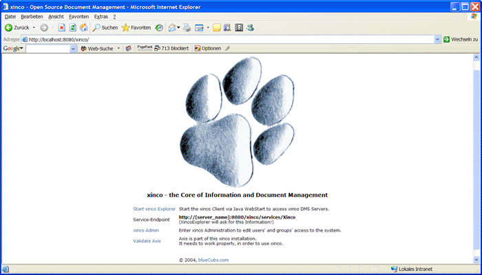

xinco DMS Server Installation Guide
This product is distributed under the Apache License, Version 2.0.
By installing and using this product, you agree to the terms of the license (see: LICENSE)!
This project supports the blueCubs vision of giving back
to the community in exchange for free software!
More information on: http://www.bluecubs.org
10 Simple Steps to xinco..... [most likely less, if you already have MySQL/PostgreSQL, Java and Tomcat running!]
-
Requirements
- MySQL 4.1 or greater (!) -> xinco uses the transaction-save InnoDB storage engine, so at least Version 4.1 is required
Download: http://www.mysql.com
- MySQL Connector for Java -> JDBC Driver for MySQL (JDBC = Java Database Connectivity)
Download: http://www.mysql.com
or
- PostgreSQL 8 or greater
Download: http://www.postgresql.org
- PostgreSQL JDBC Driver (JDBC = Java Database Connectivity)
Download: http://jdbc.postgresql.org
and
- Java Standard Edition SDK 1.5.0 or greater (!) -> Tomcat requires an SDK/JDK, not just a JRE, for compiling JSPs at runtime (SDK = Software Development Kit / JDK = Java Development Kit / JRE = Java Runtime Environment / JSP = Java Server Pages)
Download: http://java.sun.com
- Apache Tomcat 5, 5.5 or greater
Download: http://jakarta.apache.org (Tomcat is part of the Apache Jakarta Project)
-
Unzip your xinco Distribution
-
Install MySQL/PostgreSQL, create a user for your Web-Applications and start the MySQL/PostgreSQL Server
IMPORTANT NOTE for MySQL:
MySQL Connector needs to connect to MySQL via TCP; UNIX-Sockets or Named Pipes are not supported!
Make sure MySQL is listening on a TCP-Port (default: 3306)!
Don't start MySQL using the --skip-networking option and make sure skip-networking is
disabled in all MySQL configuration files like my.cnf / my.cnf.win / ...
-
Set up the database...
MySQL
- Create new Database:
mysqladmin -u root -p create xinco
- Execute Script on new Database:
mysql -u root -p --database=xinco < [xinco]\db\xinco_MySQL.sql
- ...or upgrade your existing database (see upgrade script for MySQL issue regarding recursive references!)
- Execute Script on existing Database:
mysql -u root -p --database=xinco < [xinco]\db\xinco_upgrade_Vxxx_to_Vyyy_MySQL.sql
- Optional: Execute Database Translation
mysql -u root -p --database=xinco < [xinco]\db\xinco_Translate_xx.sql
PostgreSQL
- Use
pgAdmin III to create a new database named: xinco
- Execute Script on new Database:
[xinco]\db\xinco_PostgreSQL.sql
- ...or upgrade your existing database
- Execute Script on existing Database:
[xinco]\db\xinco_upgrade_Vxxx_to_Vyyy_PostgreSQL.sql
- Optional: Execute Database Translation
[xinco]\db\xinco_Translate_xx.sql
-
Install Java Standard Edition SDK
-
Install Tomcat and...
MySQL
- ...copy the MySQL JDBC Connector (
mysql-connector-java-xxx-stable-bin.jar) to [TOMCAT_HOME]/common/lib
PostgreSQL
- ...copy the PostgreSQL JDBC Driver (
postgresql-x-x.jdbc3.jar) to [TOMCAT_HOME]/common/lib
IMPORTANT NOTE for MySQL:
MySQL Connector needs to connect to MySQL via TCP; UNIX-Sockets or Named Pipes are not supported!
Make sure MySQL is listening on a TCP-Port (default: 3306)!
Don't start MySQL using the --skip-networking option and make sure skip-networking is
disabled in all MySQL configuration files like my.cnf / my.cnf.win / ...
-
Update configuration
- Open Config File
[xinco]/webapps/xinco/META-INF/context.xml
IMPORTANT: If using Tomcat older than 5.5, rename [xinco]/webapps/xinco/META-INF/context_Tomcat_4_5.xml
to [xinco]/webapps/xinco/META-INF/context.xml and use this file instead
(Tomcat 4 and 5 use an old config syntax)!
- Update Database Login Information
- Update the full local path where xinco can store its File Repository
- Update the full local path where xinco can store its Search Index
IMPORTANT: Never point the Search Index to exactly the same directory as your File Repository!
Rebuilding the index will ERASE all files!
Pointing it to a sub-directory of the File Repository is fine though.
- Update the full local path where xinco can store files archived from the File Repository
-
Update Client Configuration
- Open
[xinco]/webapps/xinco/client/XincoExplorer.jnlp
- Find the Tag
<jnlp ...>
- Edit Attribute
codebase and set it to the location where your xinco client will be deployed to
e.g. http://mydomain.com:8080/xinco/client or http://192.168.0.1:8080/xinco/client
-
Create xinco.war and deploy the xinco Web-Application!
- Switch to [xinco]/webapps directory
- Execute
PackXincoToWAR.bat or PackXincoToWAR.sh to pack xinco into one single Web-App-Archive (WAR)
- Use Tomcat Manager for deploying
xinco.war on your server
- Start Tomcat!
[TOMCAT_HOME]/bin/startup.bat or [TOMCAT_HOME]/bin/startup.sh
- During startup, your configuration from
[xinco]/webapps/xinco/META-INF/context.xml, now included in xinco.war, should automatically be added to Tomcat's configuration, so that database connections and file access work right away!
- IMPORTANT: If you do NOT use Tomcat Manager to deploy xinco, do the following:
Copy [xinco]/webapps/xinco.war to [TOMCAT_HOME]/webapps
Copy [xinco]/webapps/xinco/META-INF/context.xml to [TOMCAT_HOME]/conf/Catalina/localhost/xinco.xml
Your xinco configuration should be in the right place now as well. Start Tomcat!
-
Test your xinco Installation and Rebuild the Document Index!

====================================================
= Standard Users: (change passwords immediately!) =
= Name: admin Password: admin =
= Name: user Password: user =
====================================================
- Go to:
http://[your_domain]:8080/xinco
- Validate integrated Apache Axis (Troubleshooting: http://ws.apache.org/axis/)
- Test the XincoAdmin Interface and set up Users + Groups
- Rebuild the document index from the XincoAdmin Interface!
- Test the Client (XincoExplorer) via Java Web Start
- You're done! Thanks for using xinco!!!
A) Troubleshooting:
-
Tomcat 4 expects libraries in different folders:
- copy all files from
[TOMCAT_HOME]/webapps/xinco/WEB-INF/lib to [TOMCAT_HOME]/common/lib
- move
xmlParserAPIs.jar and xercesImpl.jar to [TOMCAT_HOME]/common/endorsed
- it should work now!
-
Tomcat Manager
- Edit
[TOMCAT_HOME]/conf/tomcat-users.xml
- Add the following lines:
<role rolename="manager"/>
<user username="Manager" password="your_manager_password" roles="manager"/>
- Restart Tomcat and you'll be able to access Tomcat Manager!
© 2004-2007, blueCubs.com